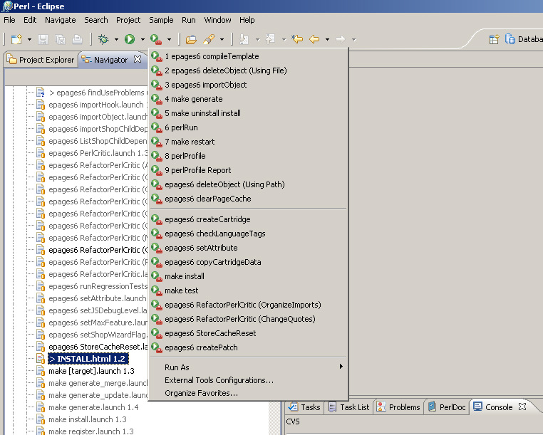
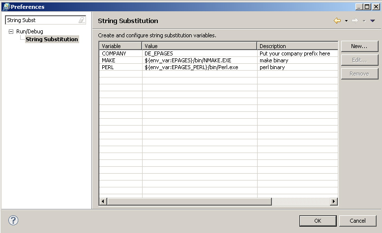
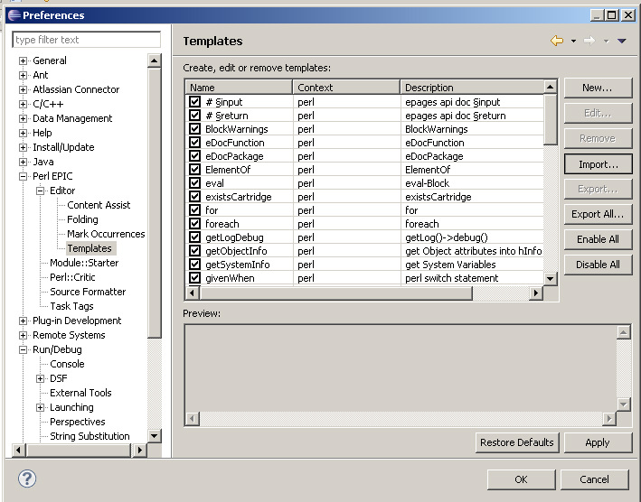
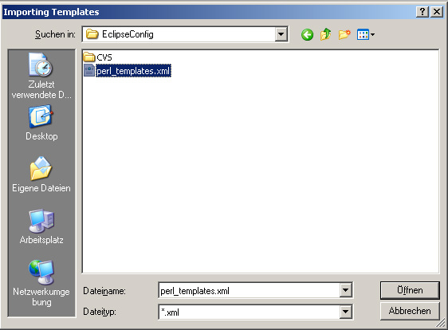
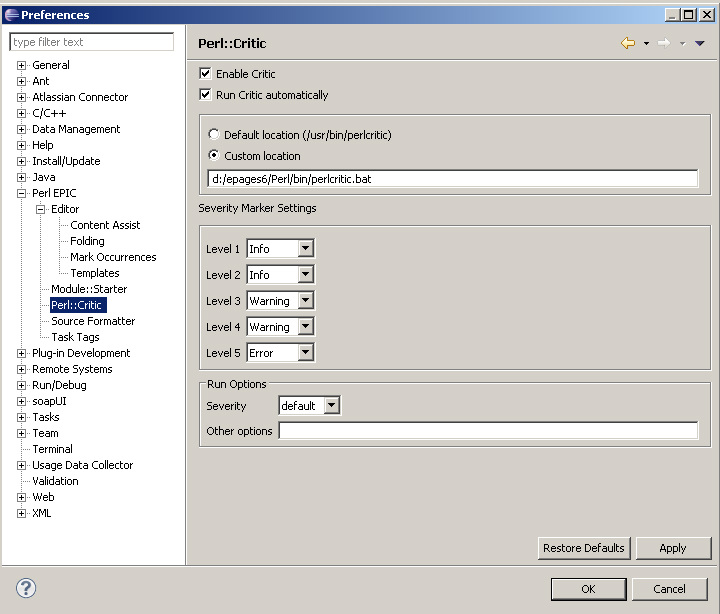

Eclipse Configuration for ePages
Prerequisite
You should have the latest Eclipse (3.4 or later) containing EPIC (0.6.35 or later) installed and running.
You should also have a recent version of ePages (6.9 or later) installed on your computer.
Installation
This distribution contains an Eclipse project with a set of commonly used ePages tools prepared
for you to use as "External Tools" in Eclipse. Some of them take
parameters, some of them don't. Fortunately, all you need to do to
add these tools, is place this project in your workspace.
Here's a list of what is currently included in our distribution:
- epages6 checkJSSyntax - calls DE_EPAGES/Presentation/Scripts/checkJSSyntax.pl
- epages6 checkLanguageTags - calls DE_EPAGES/Presentation/Scripts/checkLanguageTags.pl
- epages6 checkUnusedFiles - calls DE_EPAGES/Presentation/Scripts/checkUnusedFiles.pl
- epages6 clearPageCache - calls DE_EPAGES/Object/Scripts/clearPageCache.pl
- epages6 compileTemplate - calls DE_EPAGES/Presentation/Scripts/createCtmpls.pl
- epages6 copyCartridgeData - calls DE_EPAGES/Installer/Scripts/copyCartridgeData.pl
- epages6 createCartridge - calls DE_EPAGES/Cartridge/Scripts/CreateCartridge.pl
- epages6 createCtmpls - calls DE_EPAGES/Presentation/Scripts/createCtmpls.pl
- epages6 deleteCtmpls - calls DE_EPAGES/Presentation/Scripts/createCtmpls.pl with options -delete
- epages6 deleteObject (Using File) - calls DE_EPAGES/Object/Scripts/delete.pl using selected file as input
- epages6 deleteObject (Using Path) - calls DE_EPAGES/Object/Scripts/delete.pl using a path prompt
- epages6 deleteHook - calls DE_EPAGES/Trigger/Scripts/delete.pl
- epages6 exportShop - calls DE_EPAGES/Object/Scripts/export.pl -withdefaults -withoutguids -withoutcreationdate
- epages6 findUseProblems (Write Cache File) - calls DE_EPAGES/XML/Scripts/findUseProblems.pl to create EXPORTS-API Cache File
- epages6 importHook - calls DE_EPAGES/Trigger/Scripts/import.pl
- epages6 importObject - calls DE_EPAGES/Object/Scripts/import.pl
- epages6 PerlCritic - calls DE_EPAGES/Core/Scripts/critic.pl
- epages6 RefactorPerlCritic (*) - calls DE_EPAGES/Core/Scripts/refactor.pl
- epages6 setAttribute - calls DE_EPAGES/Object/Scripts/set.pl
- epages6 setJSDebugLevel - calls DE_EPAGES/Object/Scripts/set.pl
- epages6 setMaxFeature - calls DE_EPAGES/Shop/Scripts/setMaxFeature.pl
- epages6 setShopWizardFlag (DemoShop) - calls DE_EPAGES/Object/Scripts/set.pl
- epages6 StoreCacheReset - calls DE_EPAGES/WebInterface/Scripts/StoreCacheReset.pl
- make [target] - generic make call with popup for make target.
- make restart - restarts ePages application server
- make generate - calls code generator
- make install - installs cartridge
- make register - registers cartridge features
- make uninstall - uninstalls cartridge
- make uninstall install - reinstalls cartridge
- make unregister - removes feature registrations
- perlRun - calls perl to run a .pl file
- perlProfile - calls perl -d:NYTProf on a .pl file
After adding this project to your Eclipse workspace, you should see something like in this screenshot.

The scripts are designed to be plaform independent. So,
some variables need to be set to point to the correct executables.
You have to create Eclipse substitutions for PERL,
MAKE and set a replacement for COMPANY, like shown in the sccrenshot.
Some of the scripts rely on an environment variable called EPAGES_TESTSITE. You should
assign it, e.g. to your demo site Store.

We also have a list of perl code templates. If you want to add these,
go to the EPIC Editor Templates, and click on "Import".

Select perl_templates.xml from your EclipseConfig project.

Perl::Critic
We encourage you to use Perl::Critic to enforce clean perl code. To use ePages default settings,
set the environment variable PERLCRITIC to point to $ENV{EPAGES_CARTRIDGES}/Core/Scripts/perlcritic_hard.conf.
We have also provided an extended Perl::Critic configuration that even includes informational messages in perlcritic_hard_ide.conf.
You may place this file into your project root folder, name it .perlcriticrc, and adapt it to your needs.
To enable some additional Perl::Critic rules defined by ePages, you have to add
.../DE_EPAGES/Core/Scripts and .../DE_EPAGES/XML/Scripts to your PERL5LIB environment variable.
See the following screenshot for the configuration settings of Perl::Critic in Eclipse.

PerlTidy
ePages uses the following line of PerlTidy settings. Feel free to use this as a starting point, name it .perltidyrc and
place it in your project root folder.
-st -se -ibc -i=4 -cti=0 -sot -ndws -pt=1 -bt=1 -sbt=1 -bbt=1 -nsfs -nolq -l=160
-wbb="% + - * / x != == >= <= =~ !~ < > | & = **= += *= &= <<= &&= -= /= |= >>= ||= //= .= %= ^= x="
Last Modification
February 15th, 2011 by ePages Training Department.